管理人ぎんの日々のプレイ記録
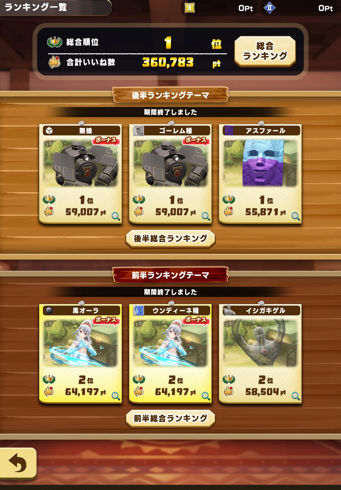
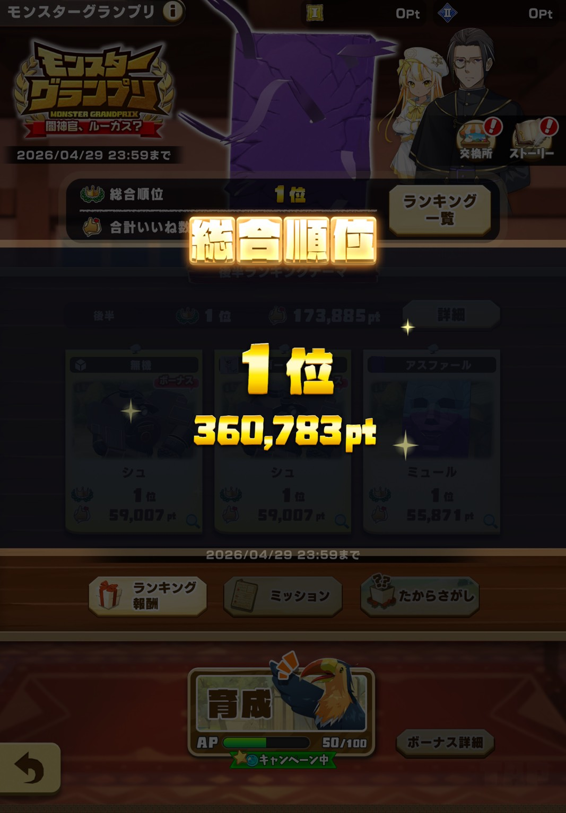
ちょっと遅くなりましたが2026年4月のモンスターグランプリで総合1位をとることができたことを報告します！
モンスターグランプリが実装されてから2年、2位は何度かとったことはありましたが総合1位はとったことがなかったのでいつかは1位をとってみたいとずっと思っていましたとれました。
総合力育成は他のコンテンツの育成とちょっと毛色が違うので難しいところもありますが最後まで走り切れてよかったです。
近いうちに総合力育成の記事もいくつかあげる予定なのでお待ちください！
モンスターグランプリで総合1位をとったことで現在実装されているすべてのコンテンツでの1位を達成しました！
だいたいのことは配信でも答えられると思うのでぜひ遊びに来てください！約束ですよ。約束しましたね。
あとLINEモンスターファーム徹底攻略(当サイト)にこんな機能がほしいという声があれば実装しますので色んな意見もお待ちしてます！
配信3周年記念配信お疲れ様でした！たくさんの人にお祝いしてもらえてめちゃくちゃ嬉しかったです！
無事モングラ更新は出来ずマスモンは全売却して5体のモンスターをルーレットで星10にしました！
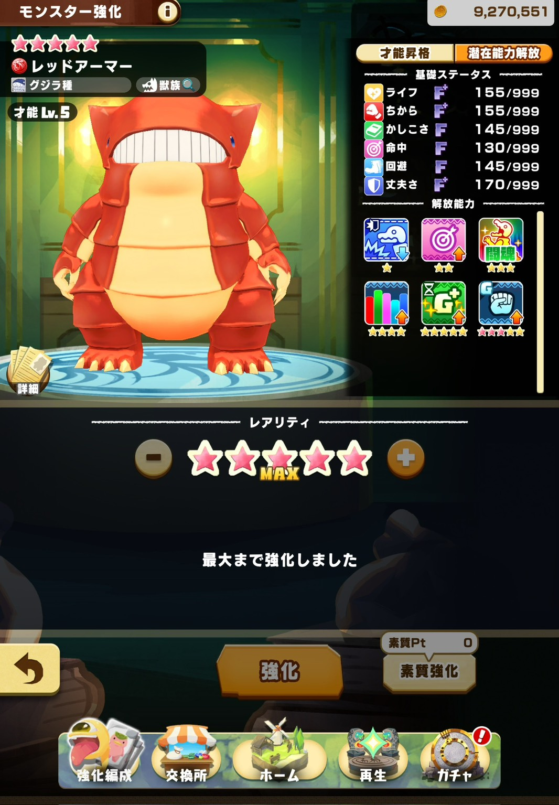
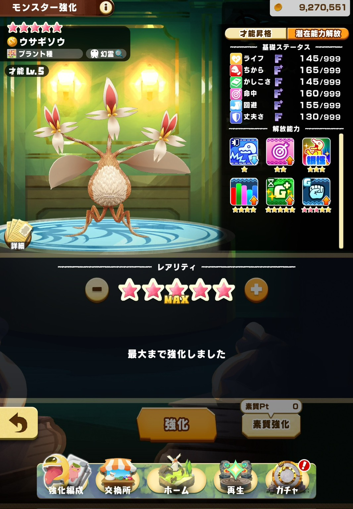
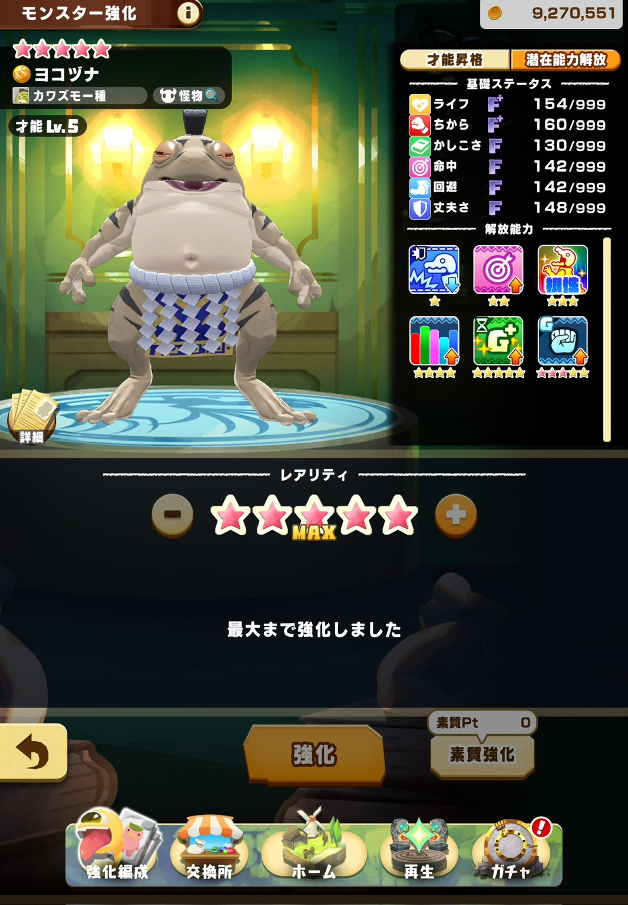
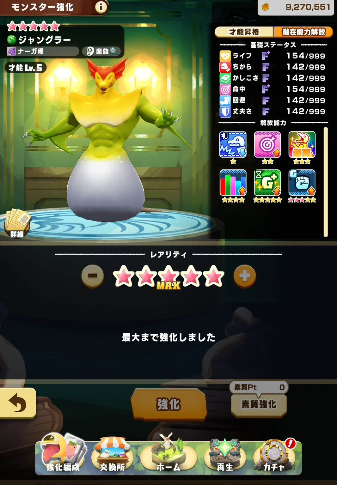
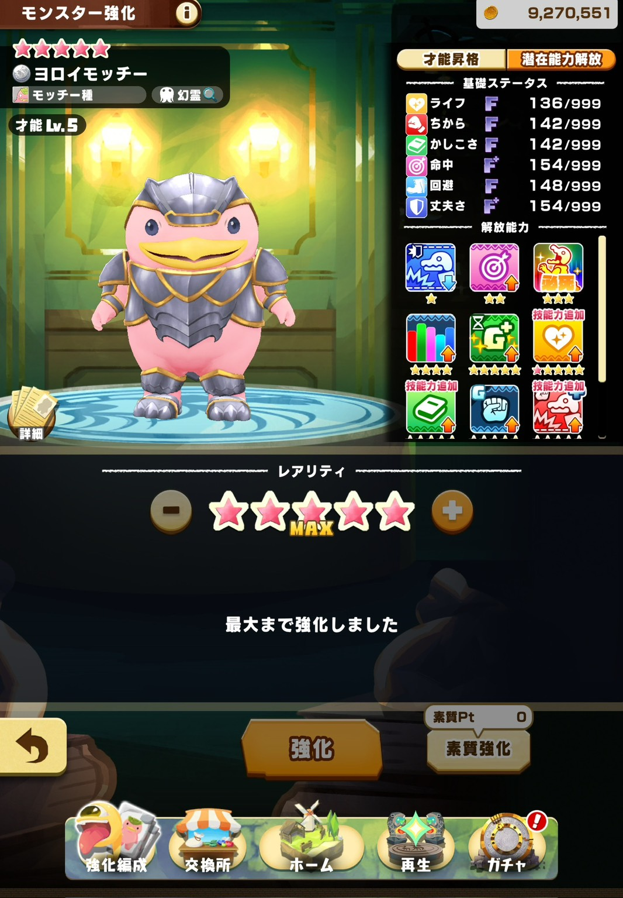
4周年目も配信頑張るぞ💪
来月コラボないのかな！
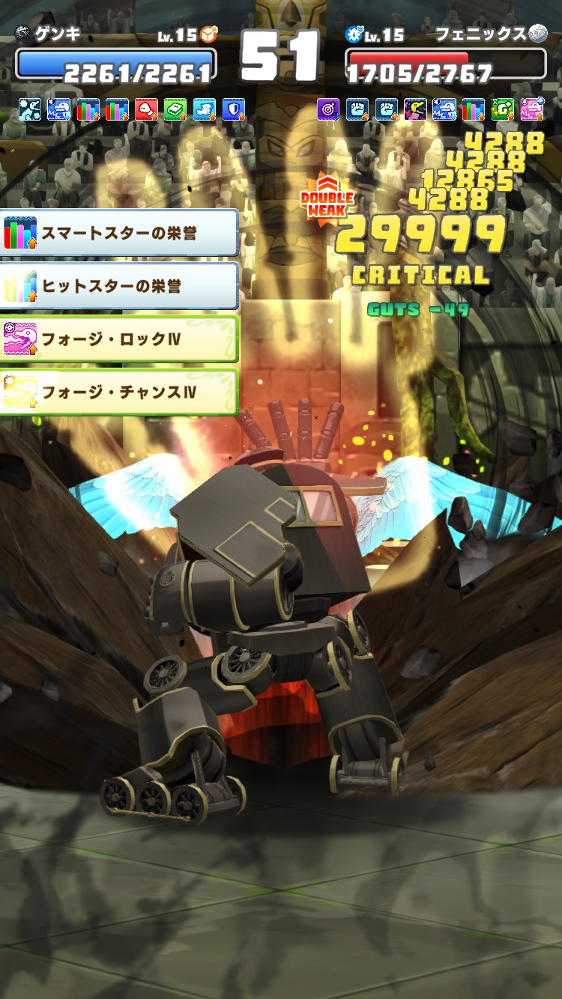
超連戦でもダメージがカンストしました！火力能力もりもりにしたら、序盤のフォイル（丈夫さ30%アップの能力）が1つあるだけでも高火力が出るようになりました！
決戦だと上位勢は30万以上ダメージが出てるので、極級だけでもダメージ上限撤廃しないかなあと思うなどする。
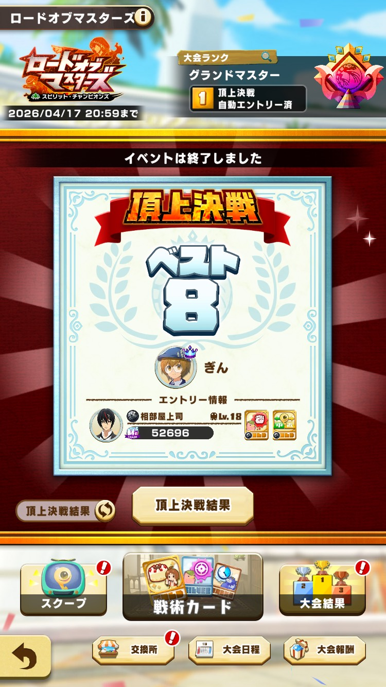
頂上決戦は1回戦突破してベスト8でした！
投票してくださった方、応援してくださった方ありがとうございました！
惜しくもベスト4に届かずというところで、投票してくださった方には本当に申し訳がないという気持ちと、投票を決めたのは結局自分なんだからさ…ね？という気持ちでいっぱいです。
優勝したタロぴっぴさんおめでとうございます！
来月も頂上決戦目指して頑張るぞ！！
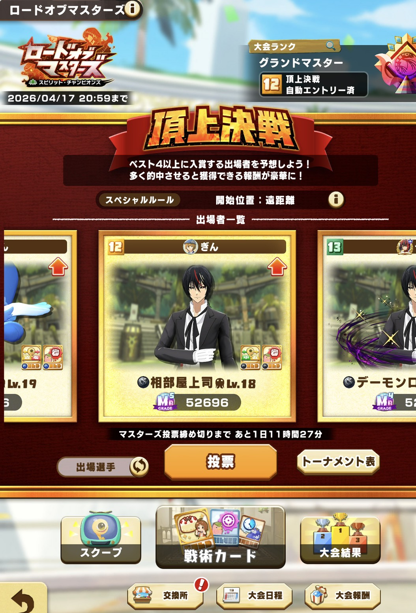
久しぶりの頂上決戦出場！いい結果で帰ってきてくれますように！
このモンスターはロードオブマスターズの記事をかなり意識して育成したからよかったら見てください！
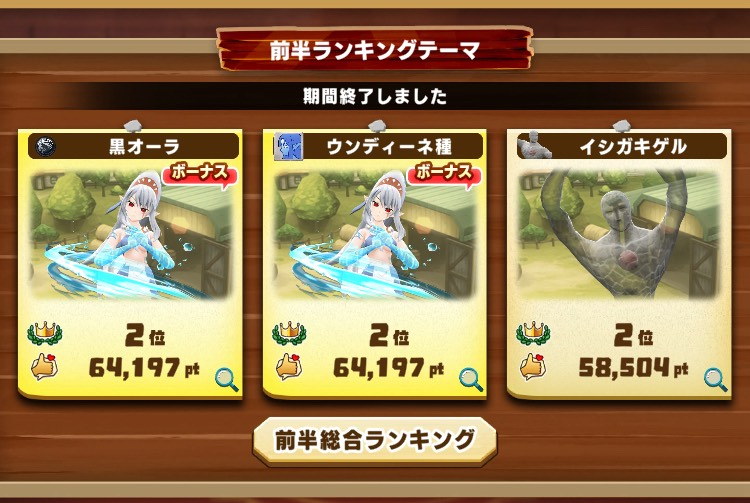
前半は各項目全部2位で総合も2位。後半はアシストカードの揃ってない無機類がテーマだが大丈夫。腎臓は2つもある。
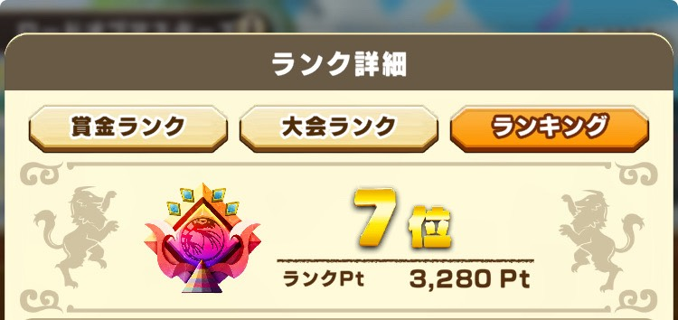
賞金ランキングは7位でフィニッシュ。1～16位の人は17～32位の誰かと初戦で当たるので誰と当たってもこわいけど頑張ってほしい。